ស្វែងយល់ពីលក្ខណៈ វិធីប្រើប្រាស់ និងប្រភេទដំណាំដែលសមស្របសម្រាប់ជីនិងថ្នាំនីមួយៗ។
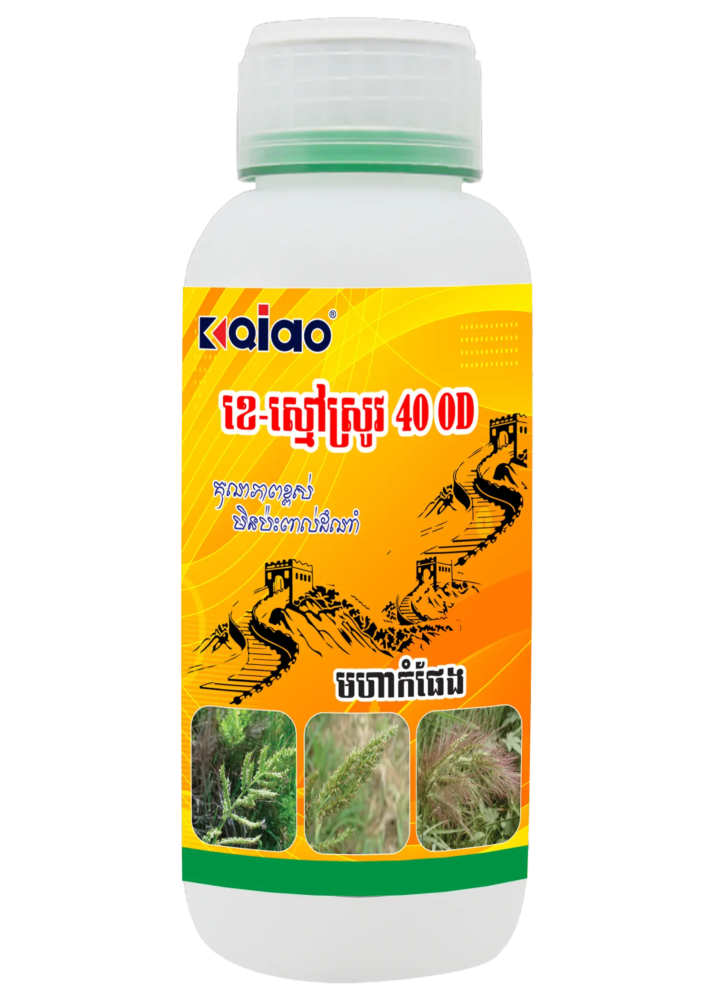
ដំណាំស្រូវ
ស្មៅអាយុ 12 ទៅ 20 ថ្ងៃ->ប្រើ 100-120 ml ក្នុងទឹក 25L
ស្មៅអាយុ 20 ទៅ 35 ថ្ងៃ->ប្រើ 120-150 ml ក្នុងទឹក 25L
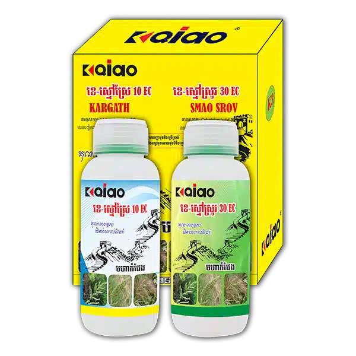
ជីអាសូតខ្ពស់ ជួយបង្កើនកំណើនស្លឹកនិងដើម ធ្វើឲ្យរុក្ខជាតិមានពណ៌បៃតងខ្លាំង
ស្មៅអាយុ15ទៅ30ថ្ងៃ->ប្រើ K2: 100ml +K3: 100ml ក្នុងទឹក25L
ស្មៅអាយុ30ទៅ45ថ្ងៃ->ប្រើ K2: 125ml +K3:125ml ក្នុងទឹក 25L

ជីអាសូតខ្ពស់ ជួយបង្កើនកំណើនស្លឹកនិងដើម ធ្វើឲ្យរុក្ខជាតិមានពណ៌បៃតងខ្លាំង
ប្រើ 100-150ml លាយទឹក 25 លីត្រ

ជីអាសូតខ្ពស់ ជួយបង្កើនកំណើនស្លឹកនិងដើម ធ្វើឲ្យរុក្ខជាតិមានពណ៌បៃតងខ្លាំង
ដំឡូងមី៖ 8-14ថ្ងៃ-> ប្រើ80-100MLលាយទឹក25L & 25-45ថ្ងៃ->ប្រើ100-150MLលាយទឹក25L
សណ្តែកបាយ៖ 15-30ថ្ងៃ-> 50-80 ML លាយទឹក 25L & 15-30ថ្ងៃ-> 50-80 ML លាយទឹក 25L
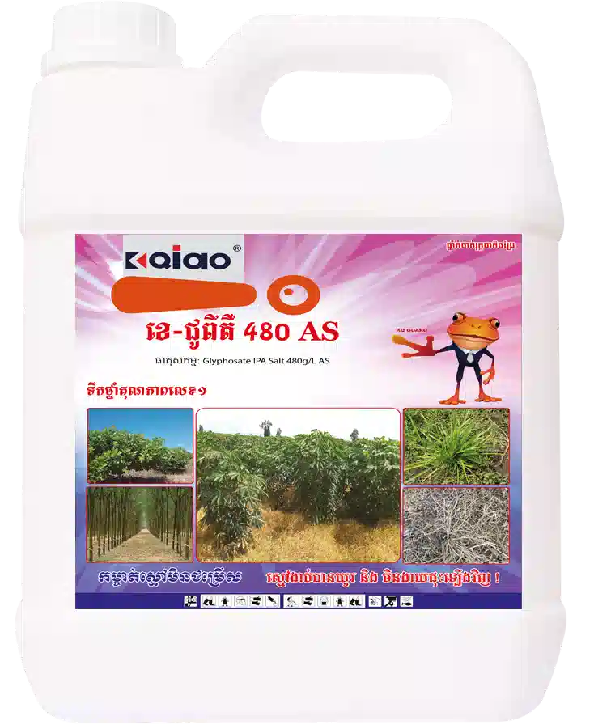
ស្មៅងាប់បានយូរ និង មិនងាយដុះឡើយវីញ
ប្រើ 100-150ml លាយទឹក25L

កម្ចាត់ស្មៅក្នុងស្រែគ្រប់ប្រភេទ សុវត្ថិភាពចំពោះស្រូវ
5-15ថ្ងៃ ប្រើ 100-120ml លាយទឹក25L

ជំនាញកម្ចាត់កក់ និងស្មៅស្លឹកធំ ក្នុងស្រែ
ប្រើ 30-50ml លាយទឹក 25l & 300-450ml ក្នុង 1ហិចតា

សុវត្ថិដល់ដីមិនប៉ះពាល់ដល់ប្រព័ន្ធឬសដំណាំជាប់បានយូរនិងមិនខ្លាចភ្លៀងធ្លាក់
ប្រើ 150-250ml លាយទឹក25L
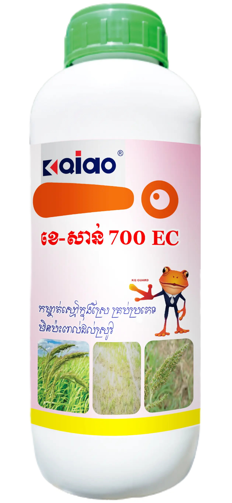
ឃុំគ្រាប់ និងកម្ចាត់ស្មៅ ក្នុងពេលតែមួយ
ប្រើ 150-250ml លាយទឹក 25L

ជំនាញ់កម្ចាស់ស្មៅចាស់ ស្មៅក្រាស់ និងស្មៅខ្ពស់ៗ ជាពិសេសស្មៅជើងក្រាស់
ប្រើ 150-250ml លាយទឹក 25L បាញ់លើផ្ទៃដី 666m² និង ត្រូវប្រើទឹក 250-375L ក្នុង 1ហិចតា (10-15 ធុង 25L)

ឯកទេស ការពារ និង ព្យាបាល ជម្ងឺបាក់តេរី
ស្រូវ= 30-50ml ក្នុងទឹក 25L
ឳឡឹក&ត្រសក់= 50-70ml ក្នុងទឹក 25L
ស្វាយចន្ទី ទុរេន មៀន ក្រូច ចេក&ស្វាយ = 500ml ក្នុងទឹក 500L
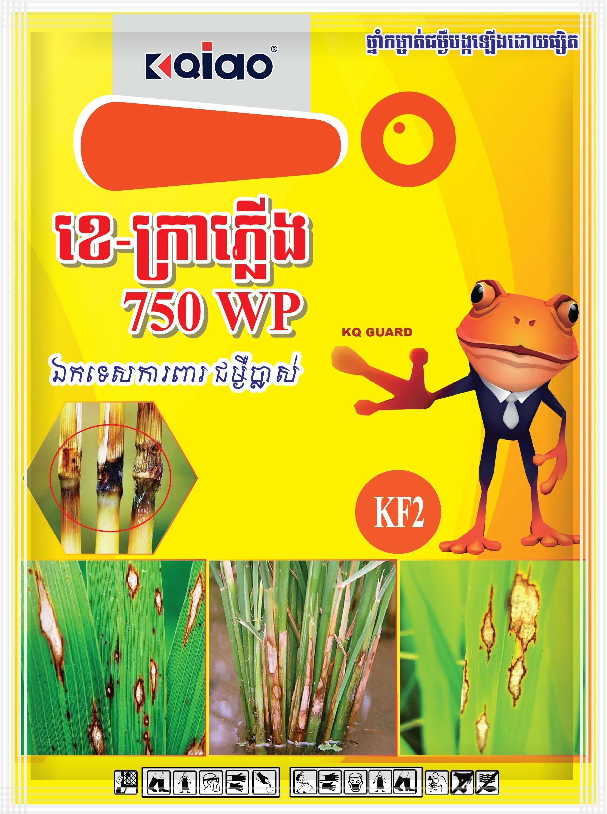
ឯកទេស ការពារ ជម្ងឺបា្លស់
ប្រើ 30-50 ក្រាម លាយជាមួយទឹក 25L បាញ់លើផ្ទៃដី 800m² បាញ់ឱ្យសព្ទលើស្លឹក និង ដើមស្រូវ
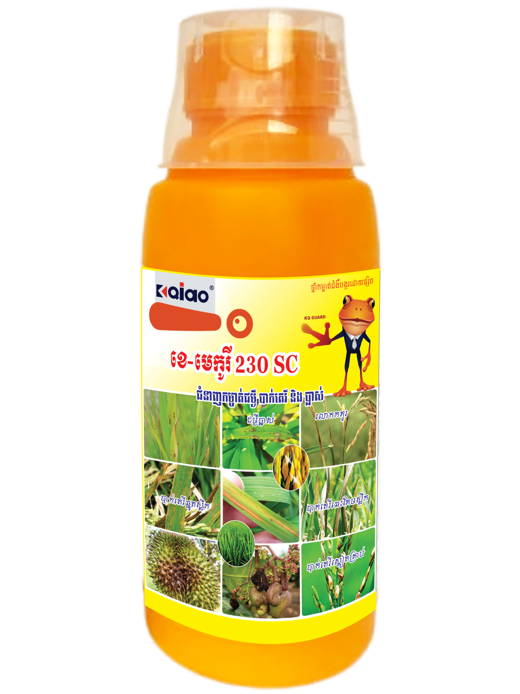
ជំនាញការពារ និង ព្យាបាល ជម្ងឺផ្សិត&បាត់តេរី
ស្រូវ= 30-50ml ក្នុងទឹក 25L
ឳឡឹក&ត្រសក់= 50-70ml ក្នុងទឹក 25L
ស្វាយចន្ទី ទុរេន មៀន ក្រូច ចេក&ស្វាយ = 500ml ក្នុងទឹក 500L
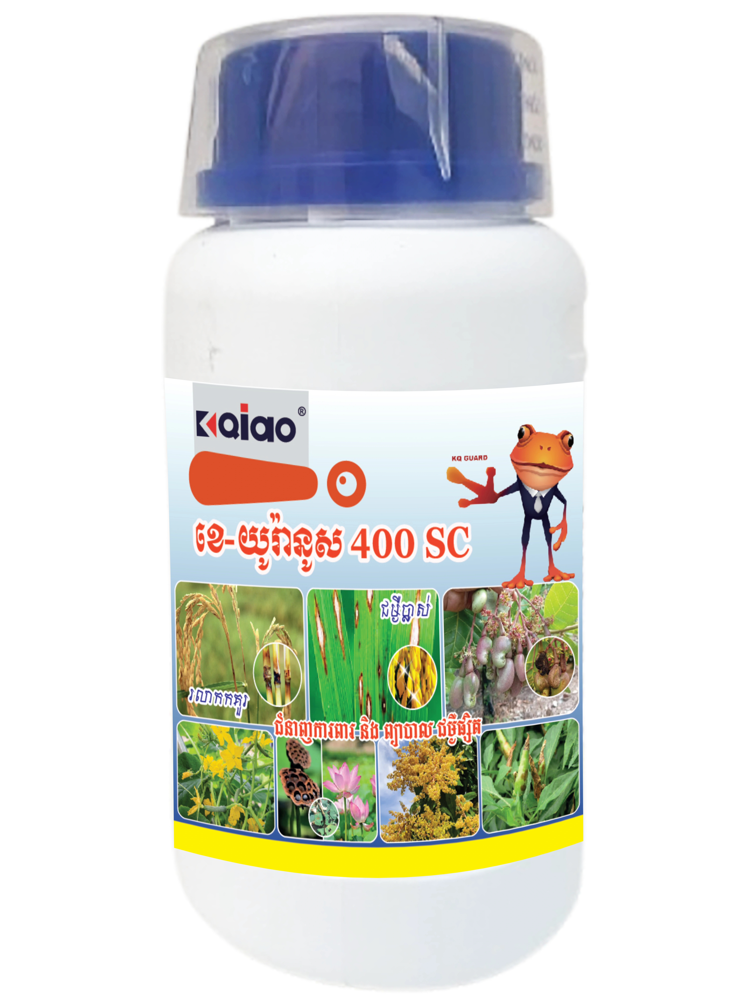
ប្រសិទ្ធភាពខ្ពស់ក្នុងការពារ និង ព្យាបាល ជម្ងឺផ្សិត បាស់ រលាកគួរ និង អ៊ុចខ្មៅគ្រាប់
ប្រើ 25-30 ក្រាម លាយជាមួយទឹក 25L បាញ់លើផ្ទៃដី 700m²
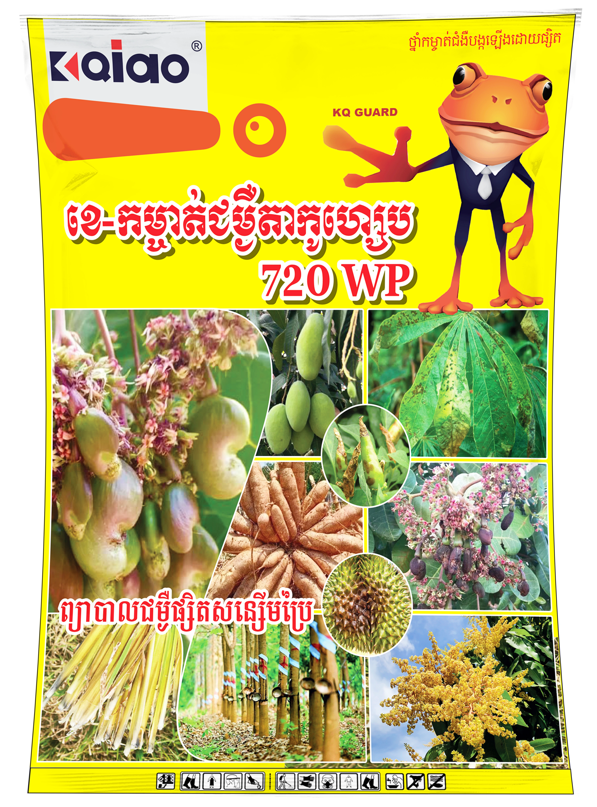
ឯកទេសការពារ និង ព្យាបាល ជម្ងឺផ្សិត
អង់ត្រាក់ណុស និង ផ្សិតសន្សើមប្រៃ
ស្រូវ សណ្តែក ឳឡឹក ឈូក ប៉េងបោះ ស្ពៃ ម្ទេស ត្រសក់ ត្រប់= លាយថ្នាំ 80-100ml ក្នុងទឹក 25L
ស្វាយ ចន្ទី កៅស៊ូ ដំណាំហូបផ្លែ ដំណាំឩស្សាហកម្ម=លាយថ្នាំ 60-80ml ក្នុងទឹក 25L
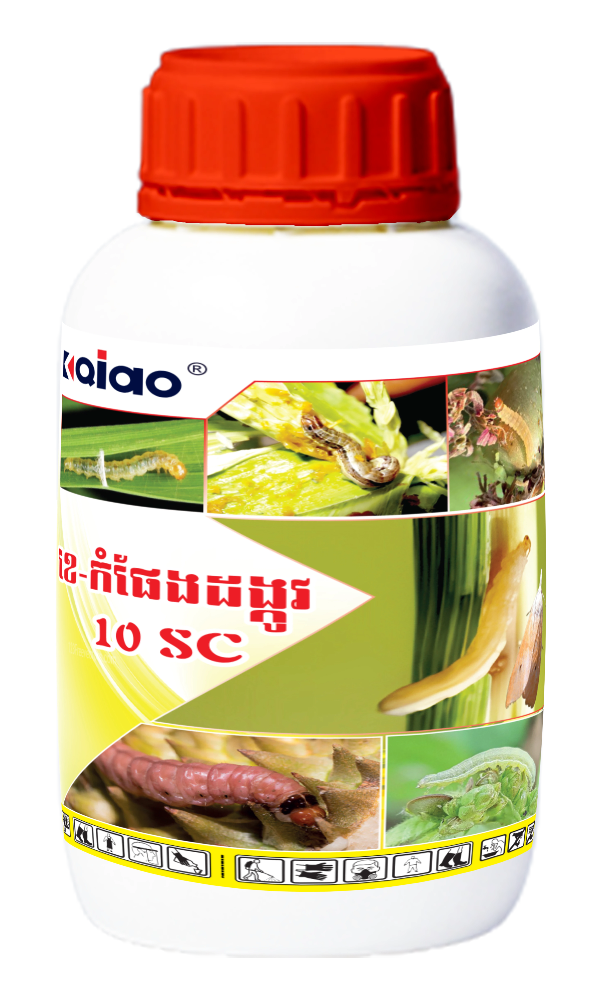
ប្រសិទ្ធភាពខ្លាំង ដង្កូវងាប់លឿន
ប្រើ 25-45 ml ក្នុងទឹក 25L

ជំនាញក្នុងការកម្ចាត់ ទ្រីប ដង្កូវមូរស្លឹក ដង្កូវផែនទី ដង្កូវចោះផ្លែ និង ដង្កូវផ្សេងៗ
ប្រើ 50-70 ml ក្នុងទឹក 25L

សម្លាប់ដង្កូវ និង សត្វល្អិតជាច្រើនប្រភេទ
លាយថ្នាំ 30-45 ml ក្នុងទឹក 25L

សម្លាប់ដង្កូវ និង សត្វល្អិតជាច្រើនប្រភេទ
លាយថ្នាំ 15-25 ml ក្នុងទឹក 25L
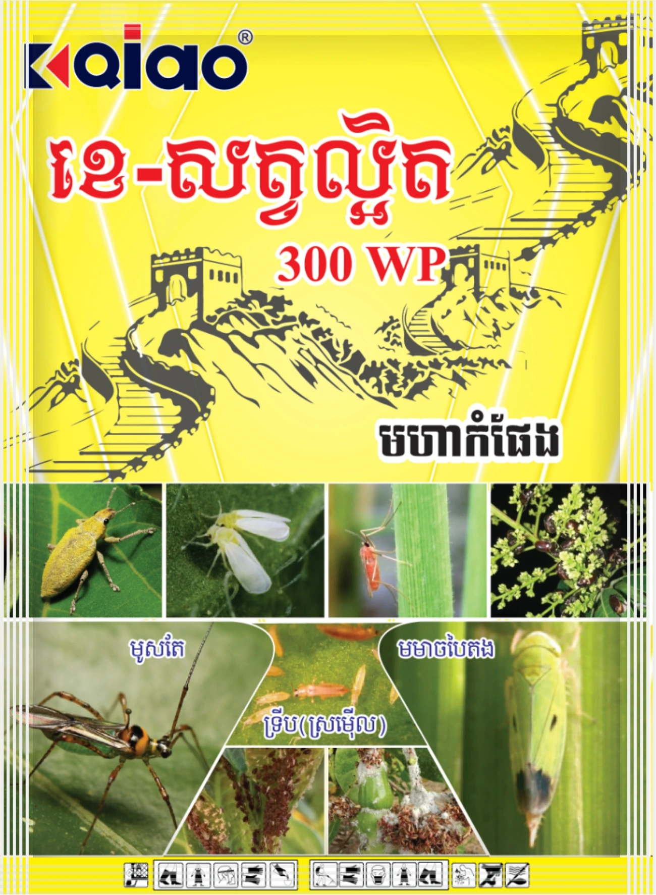
សម្លាប់សត្វល្អិតជាច្រើនប្រភេទ
លាយថ្នាំ 20-30 ml ក្នុងទឹក 25L

សម្លាប់ដង្កូវ និង សត្វល្អិតជាច្រើនប្រភេទ
លាយថ្នាំ 25-50 ml ក្នុងទឹក 25L
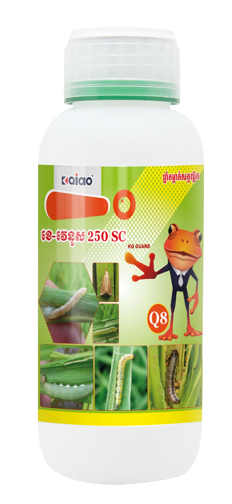
សម្លាប់ដង្កូវ និង សត្វល្អិតជាច្រើនប្រភេទ
លាយថ្នាំ 25-50 ml ក្នុងទឹក 25L
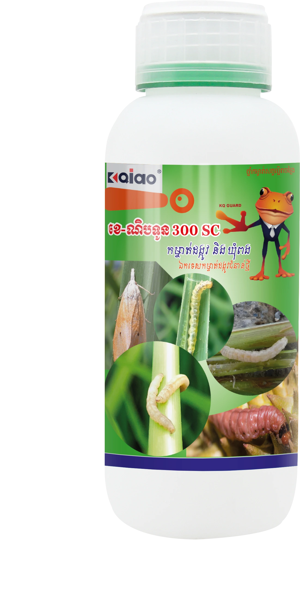
សម្លាប់ដង្កូវ និង សត្វល្អិតជាច្រើនប្រភេទ
លាយថ្នាំ 25-50 ml ក្នុងទឹក 25L
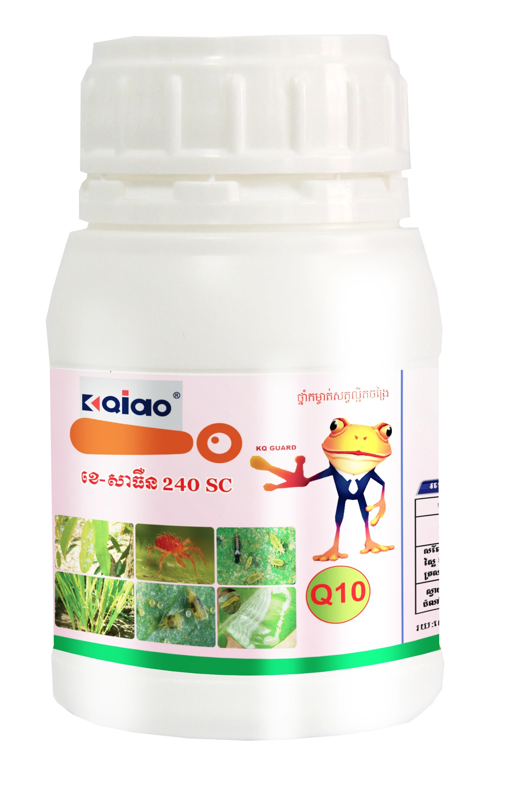
សម្លាប់ដង្កូវ និង សត្វល្អិតជាច្រើនប្រភេទ
លាយថ្នាំ 25-30 ml ក្នុងទឹក 25L
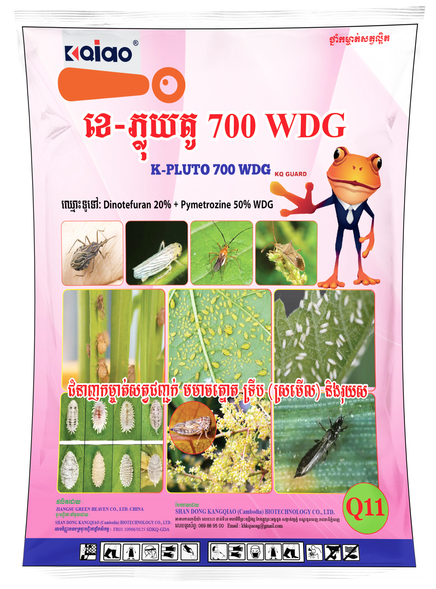
សម្លាប់ដង្កូវ និង សត្វល្អិតជាច្រើនប្រភេទ
លាយថ្នាំ 25-30g ក្នុងទឹក 25L
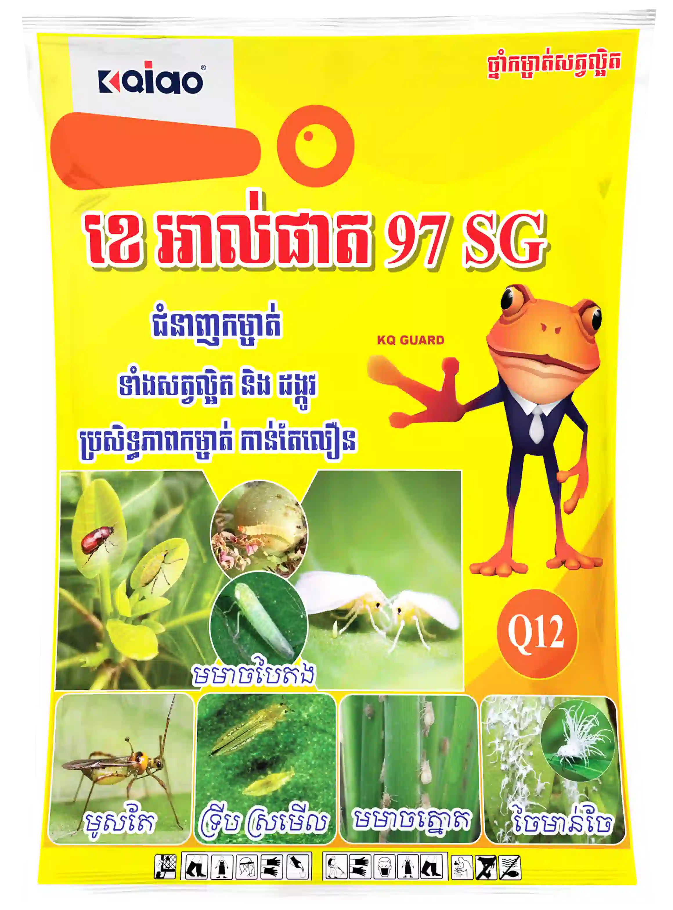
សម្លាប់សត្វល្អិតជាច្រើនប្រភេទ
លាយថ្នាំ 25-25g ក្នុងទឹក 25L
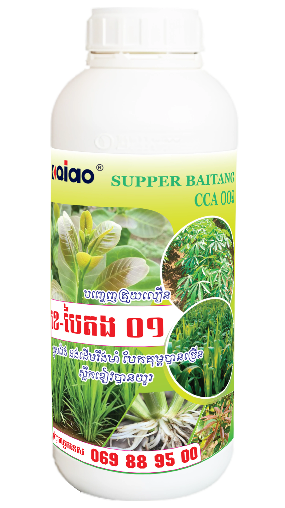
បែកគុម្ពច្រើន ឬសវែង ដងដើមរឹងមាំ ស្លឹកក្រាស់ និងខៀវបានយូរ
ប្រើ 40-60 ml ក្នុងទឹក 25L បាញ់ជីបំប៉ន់ 10-12ធុង 25L សម្រាប់ផ្ទៃដី 1ហិចតា
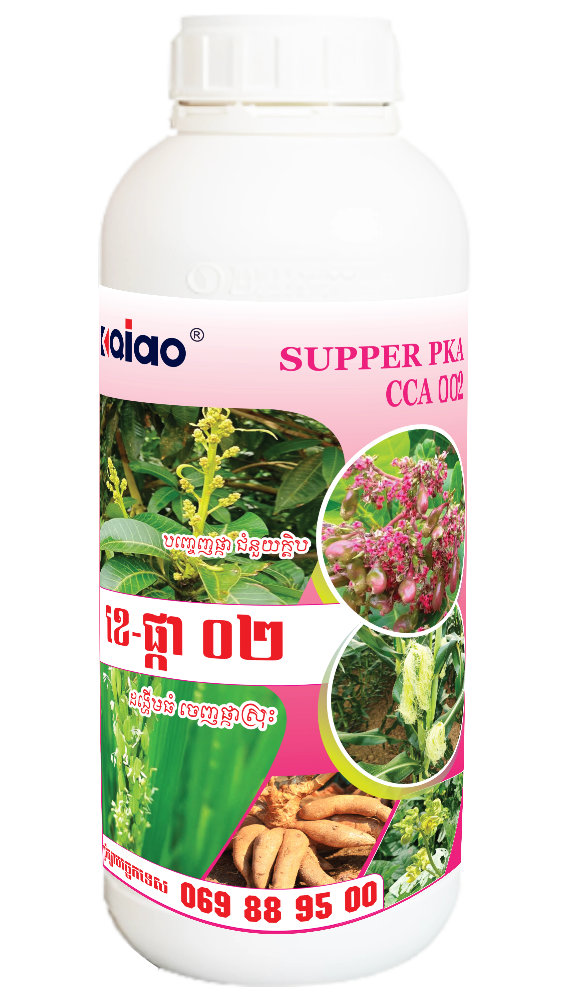
បញ្ចេញផ្កា ជំនួយក្តិប ដំង្ហើមធំ ចេញផ្កាស្រុះ
ប្រើ 40-60 ml ក្នុងទឹក 25L បាញ់ជីបំប៉ន់ 10-12ធុង 25L សម្រាប់ផ្ទៃដី 1ហិចតា
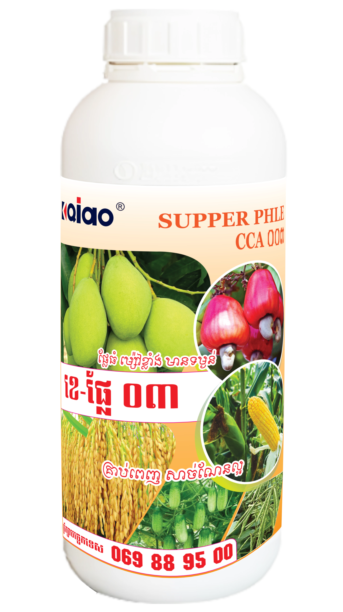
គ្រាប់ពេញ សាច់ណែនល្អ ផ្លែនធំ ម្សៅខ្លាំង មានទំម្ងន់
ប្រើ 40-60 ml ក្នុងទឹក 25L បាញ់ជីបំប៉ន់ 10-12ធុង 25L សម្រាប់ផ្ទៃដី 1ហិចតា
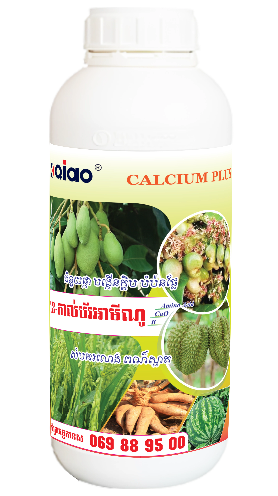
ផ្កាច្រើន ក្តិបច្រើន សម្បុរស្អាត ផ្លែធំ សាច់ណែន
ប្រើ 40-60 ml ក្នុងទឹក 25L បាញ់ជីបំប៉ន់ 10-12ធុង 25L សម្រាប់ផ្ទៃដី 1ហិចតា
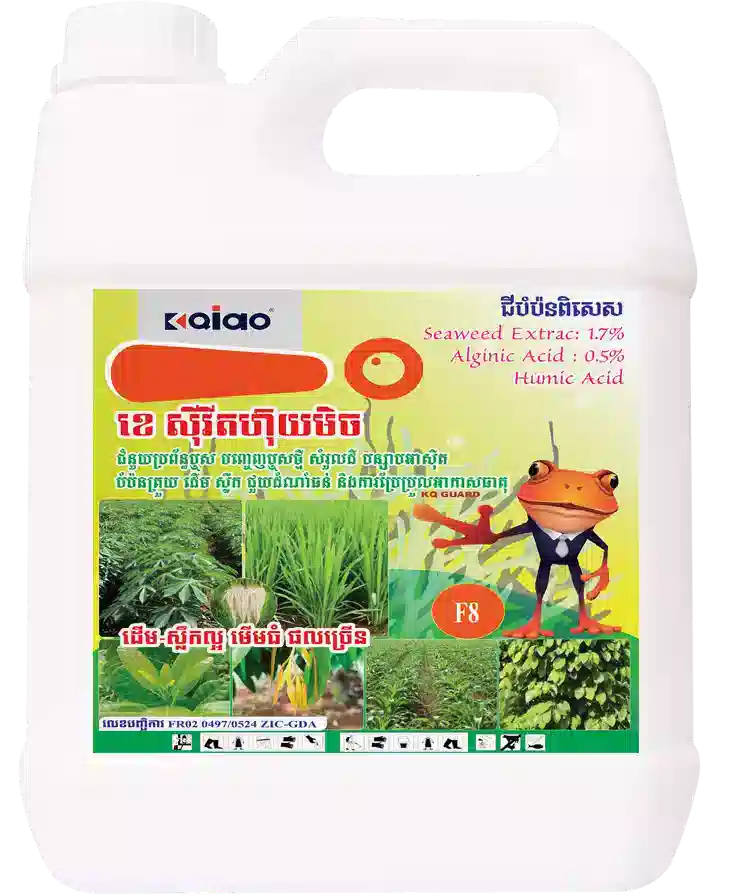
ជួយដី ជំនួយឬស ស្លឹកក្រាស់ ខៀវបានយូរ
ប្រើ 40-60 ml ក្នុងទឹក 25L បាញ់ជីបំប៉ន់ 10-12ធុង 25L សម្រាប់ផ្ទៃដី 1ហិចតា
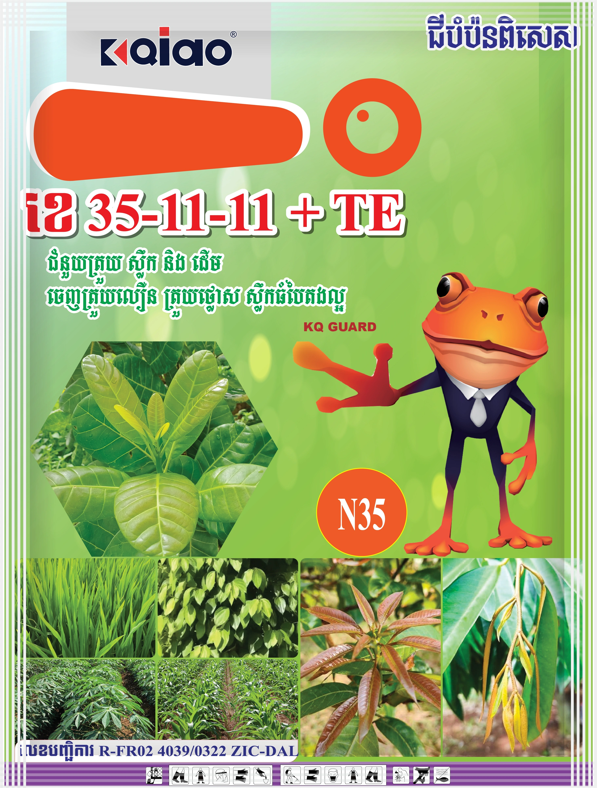
ជំនួយត្រួយ ស្លឹកនិងដើម ចេញត្រួយលឿន ត្រួយផ្លោស ស្លឹកធំបៃតង
ប្រើ 50-100g ក្នុងទឹក 25L
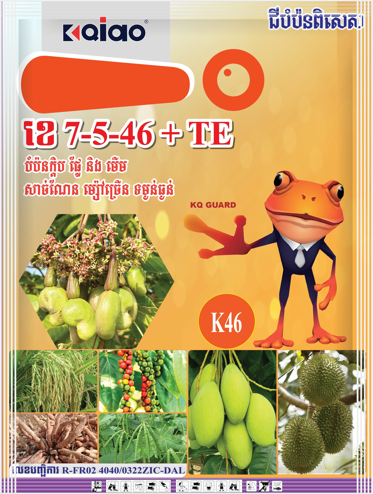
បំប៉ន់ផ្លែននិងមើម សាច់ណែន ម្ស៉ៅច្រើន ទម្ងន់ធ្ងន់
ប្រើ 50-100g ក្នុងទឹក 25L បាញ់ឱ្យជោគ លើស្លឹកនិងផ្លែ ប្រើ7-10ថ្ងៃម្តង
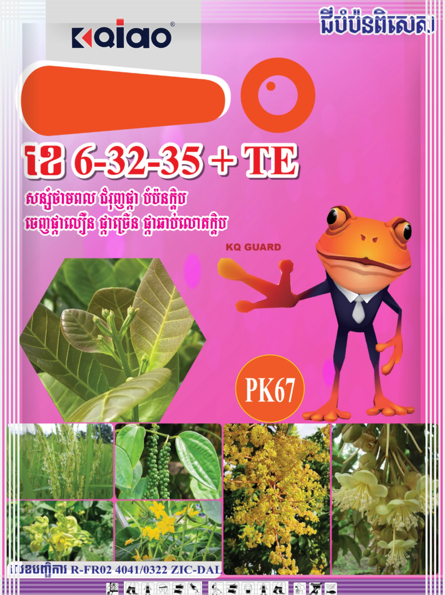
សន្សំថាមពល ជំរុញផ្កា បំប៉ន់ក្តិប ចេញផ្កាលឿន ផ្កាច្រើន ផ្កាឆាប់លោតក្តិប
ប្រើ 50-100g ក្នុងទឹក 25L បាញ់ឱ្យជោគ លើស្លឹកនិងផ្លែ ប្រើ7-10ថ្ងៃម្តង
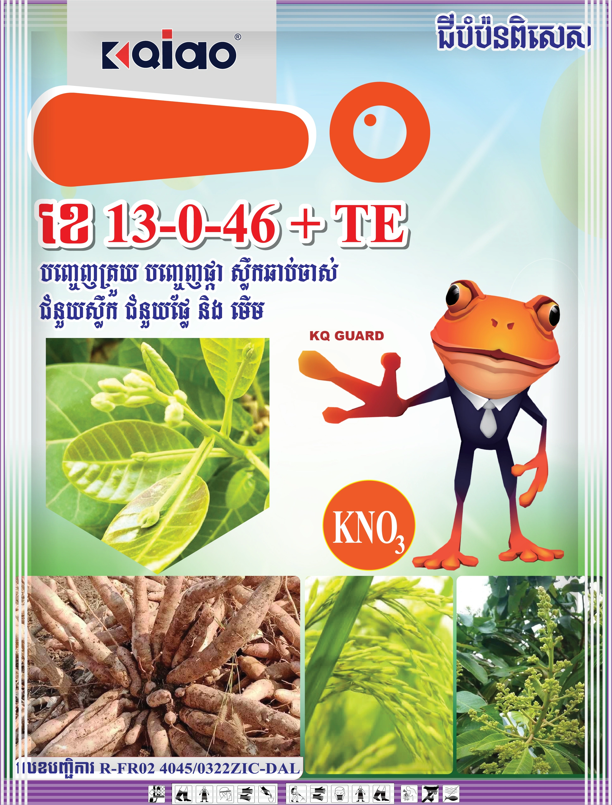
បញ្ចេញត្រួយ បញ្ចេញផ្កា ស្លឹកឆាប់ចាស់ ជំនួយស្លឹក ជំនួយផ្លែ និង មើម
ប្រើ 50-100g ក្នុងទឹក 25L បាញ់ឱ្យជោគ លើស្លឹកនិងផ្លែ ប្រើ7-10ថ្ងៃម្តង
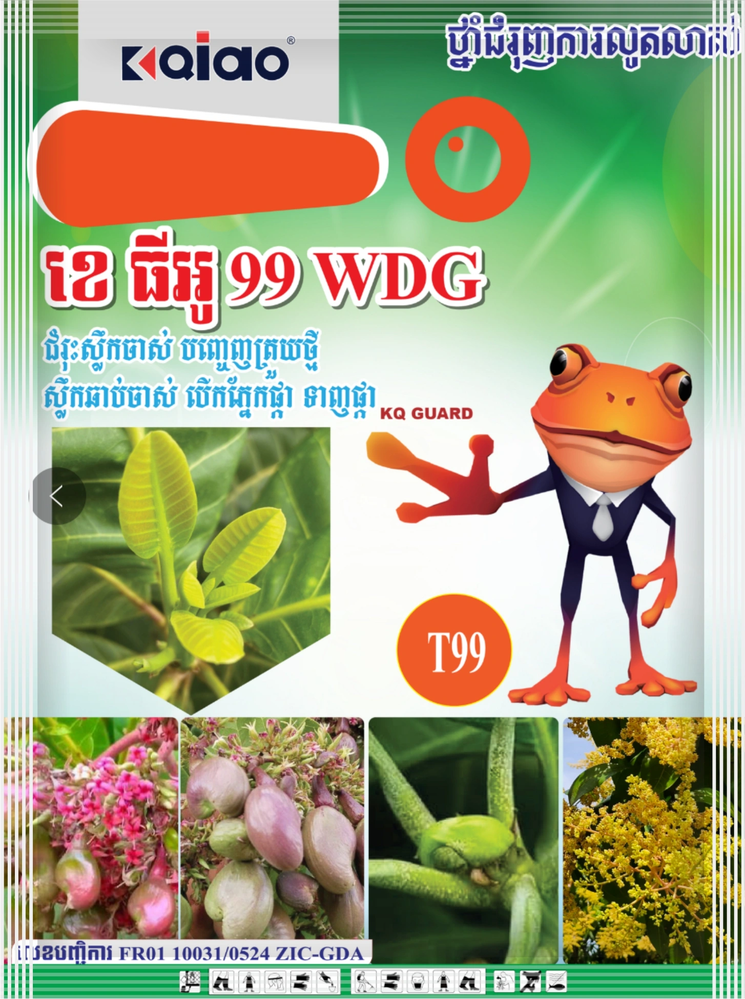
ផ្កាចេញលឿន ផ្កាស្រុះល្អ ផ្កាច្រើន
ប្រើ 2-6Kg លាយទឹក1000L បាញ់ឱ្យជោគ និងសត្វល្អ លើចុងមែក និងស្លឹក